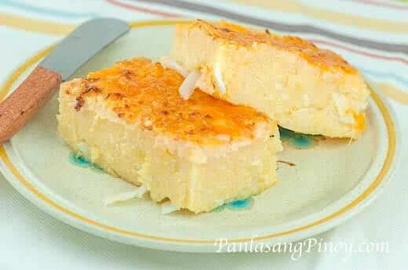

Cassava

This recipe for cassava cake consists of two (2) processes. The first is making the cassava batter, and the second is preparing the topping.
Let’s start with the batter. Combine the grated cassava, butter, milk, a portion of the cheese, sugar, eggs, and coconut milk in a mixing bowl. Use a wire whist to mix all the ingredients together. This step will only take a couple of minutes to complete.
You will need to grab a baking pan and grease it with oil. You can simply spray cooking oil such as Pam, or you can pour around 1 teaspoon of oil and spread it using your fingers. Pour the cassava mixture to the baking pan. At this point, the oven should have been preheated.
Ingredients
- 2 packs grated cassava about 2 lbs total weight
- 2 cups coconut milk
- 1/2 12 oz. can evaporated milk
- 3 pieces egg
- 1/4 cup butter melted
- 6 tablespoons cheddar cheese grated
- 1/2 cup condensed milk
- 14 tablespoons granulated white sugar
Instruction
- Make the batter by combining the grated cassava, butter, 1/2 cup condensed milk, 1/2 cup evaporated milk, 6 tablespoons cheddar cheese, 14 tablespoons sugar, and 2 eggs in a mixing bowl and mix thoroughly.
- Add the 2 cups coconut milk in the mixing bowl where the mixed ingredients are. Mix again.
- Grease the baking tray then pour-in the batter (these are the ingredients that you just mixed together).
- Pre -heat oven for 350 degrees Fahrenheit for 10 minutes then put-in the baking tray with batter and bake for 1 hour.Remove from the oven and set aside.
- Meanwhile prepare the topping by combining 2 tablespoons sugar and flour in the heated saucepan.
- Pour-in 1/2 cup condensed milk then mix thoroughly.
- Add 2 tablespoons cheddar cheese while stirring constantly.
- Pour 2 cups of coconut milk and stir constantly for 10 minutes
- Pour the topping over the Cassava Cake (baked batter) and spread evenly.
- Separate the yolk from the egg white of the remaining egg (we’ll be needing the egg white only)
- Glaze the topping with the egg white using a basting brush. Simply dip the brush to the egg white and brush it on the cassava cake.
- Set your oven to broil mode. Broil the Cassava cake until color turns light brown.
- Garnish with extra grated cheese on top. Serve. Share and enjoy!